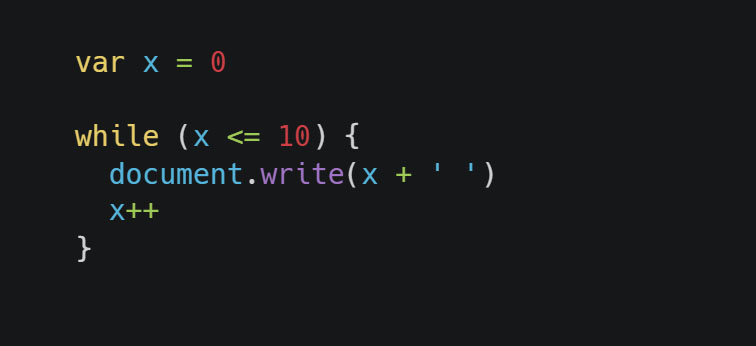
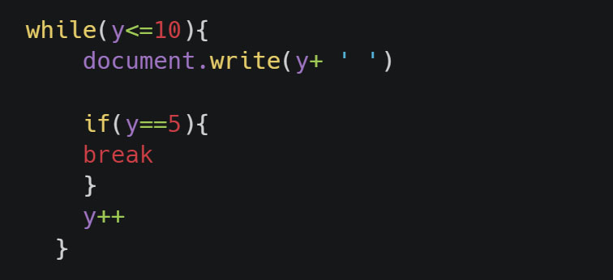
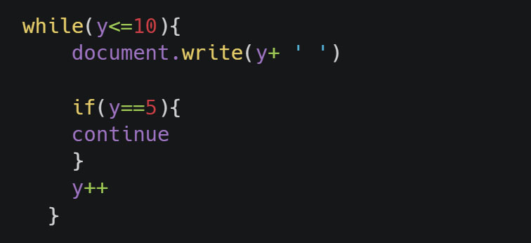
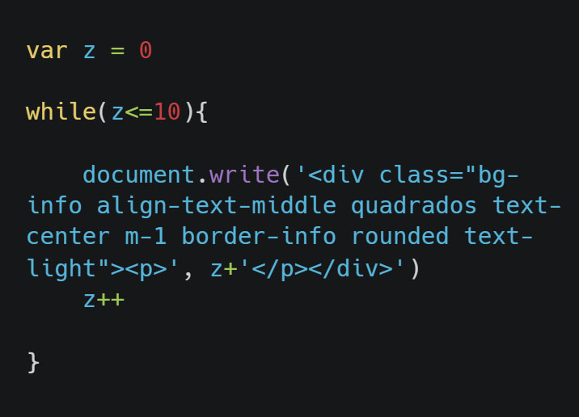
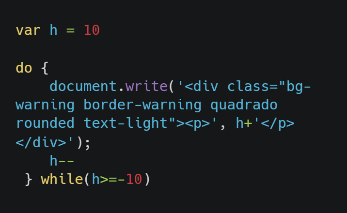
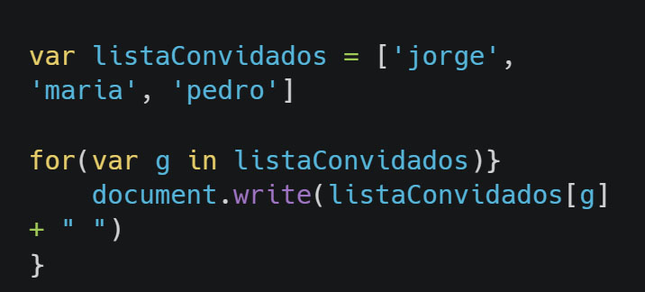

While
Tradução: enquanto
Lógica: enquanto algo for verdade, faça
enquanto 'x' for igual ou menor que 10
para cada loop, adciona '+1' ao x, podia ser escrito como: x + = 1, ou x = x+1
Repetição While com Break
o break faz com o loop pare, se atingir certa condição
Usando While com Continue
Cuidado! Assim que a condição é atingida, o continue faz com o faça uma nova verificação, pode gerar um loop infinito
Usando While para criar elemento
10 quadrados usando while
Usando DO WHILE
A grande diferença é que o comando será executado pelo menos uma vez, pois o teste é realizado apenas apos a execução
For
Tradução: Para
Lógica: Variável; condição; controle
Podemos também utilizar os comandos Break e Continue
Array + Loops
Tabuada do 1 ao 9
A cada interção do primeiro loop, o segundo loop sera executado 10 vezes.
for in
A cada interação do laço, a variavel g recebe o valor do array, até que o valor seja undefined
Resultado:
Método .forEach
Tradução: Para cada. É uma função do array, precisamos primeiro criar um array